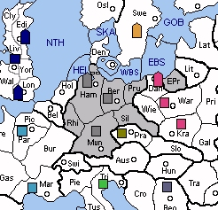

GERMANY (G) faces challenges similar to France, in that the standard openings are somewhat more complicated. German growth prospects are good and several SCs are close at hand. Holland can be taken on the first move and will probably be a popular opening. To the north, Italy's Swedish fleet can challenge Germany for control of Denmark and greatly complicate Scandinavian matters. To the south, Switzerland and Austria are available, but Turkey's Czech army will play an important role in deciding the fate of the Alps.
Germany is also vulnerable to an early attack by Poland. Polish moves of F DAN-PRU and A KRA-SIL might result in the loss of a home centre. At the very least, Germany would forfeit one of Denmark or Holland. Germany may blunt this attack by bouncing either Prussia or Silesia on the first turn, but at the expense of western expansion.
On the bright side, Yugoslavia is an excellent minor for Germany. Army Beograd wields substantial influence over the Balkans (and the Alps to some extent), and it provides Germany with some very attractive options for expansion. Often, this army can grab Hungary in 1929 and earn itself a second build. While situated close enough to support an early joint attack on Italy, Yugoslavia also provides the opportunity for Germany to build fleets in the Mediterranean.
|
 |
MINOR (Basic): Yugoslavia SUGGESTED MINORS (Advanced): Czechoslovakia, Sweden POTENTIAL ALLIES: BRITAIN versus France and Sweden (Italy) USSR versus Poland and Sweden (Italy) |
Suggested Openings for Germany:
Hindenburg: |
A BER-HAM, A MUN-AUS/SWI, F HAM-DEN |
|
Germany can capture three centers in its first year, but only by leaving itself open to a Polish attack. This aggressive opening is named for its extremely combustible nature. Oh, the humanity! |
|
Polish Defense: |
A BER-SIL, A MUN-SWI, F HAM-HOL |
|
While Holland’s capture is guaranteed, Germany anticipates a bounce in Silesia and forgoes Denmark. If Poland fails to bounce, Germany might attack Krakow. |
|
Lebensraum: |
A BER-MUN, A MUN-RHI, F HAM-HOL |
|
Germany seeks living space in the west, asserting a strong claim over Belgium. Peace with Poland is a necessity but an aggressive French opening could complicate matters. |
Germany may consider a partnership with Britain as useful, particularly if Italy is unfriendly. Both nations can wrap matters up quickly against Italy's forces in Sweden and then turn their attention south towards France. Meanwhile, if Germany needs to buy time against Italy, it might consider "selling" Austria to Turkey's Czech army. When dividing the spoils, Germany might prefer to keep Scandinavia in exchange for letting Britain have France. If desired, Germany could then call on Poland's Spanish forces to join in an attack on Britain. However, to prevent a two-front war, Germany should make sure that Poland remains stalemated against USSR.
If an eastern partner is preferred, Germany has a potential ally in USSR. Naturally, Poland would be the initial target. However, the road to Warsaw is fairly long, and Germany should not anticipate blitzkrieg results if it attacks Poland. Once engaged, USSR can be counted on to distract Poland for quite some time. Thus, Germany might continue to apply pressure against Poland in exchange for Soviet support in the Balkans. However, Germany must be careful not to irritate Turkey with Balkan expansion until Czechoslovakia can be conquered.
Both Italy and Germany pose substantial problems for each other. Like two snakes swallowing each other by the tail, each nation surrounds the other with help from its minor. To alleviate some of the pressure, Germany should encourage Italy to expand west into France. This might be accomplished by offering Switzerland to Italy in exchange for Austria. Of course, Italy will need to maintain an army in Piedmont to support Switzerland and this might pave the way for future conflict.
In addition, Germany may need to placate the Turkish army in Czechoslovakia. Turkey will probably want support into Austria to limit Italian growth and to gain a build for itself. Germany may find this acceptable, provided that Turkey builds in its homeland. However, even if Turkey stabs Germany and supports a French attack in fall 1929, Army Munich can always retreat to Prague and preserve a build.